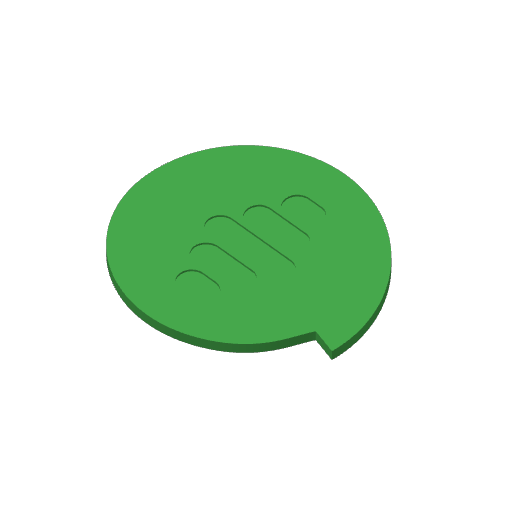
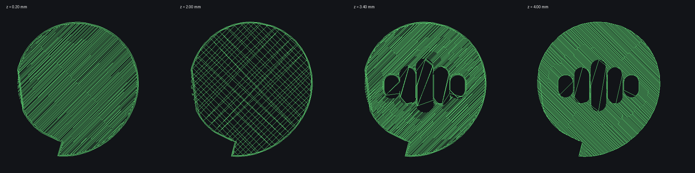

O logo do Anima Podcast convertido em objeto sólido, configurado para Bambu Lab A1 com bico de 0,4 mm e Generic PLA. Os projetos já vêm com impressora, filamento, processo e posição na mesa definidos — é abrir no Bambu Studio e imprimir.

| Medidas | 90,0 × 98,8 × 4,0 mm |
|---|---|
| Camadas | 20 × 0,20 mm |
| Logo | rebaixado 0,8 mm (4 camadas) |
| Material | Generic PLA · 22,47 g |
| Tempo | 41 min 03 s |
| Mesa | Textured PEI Plate · sem suportes |
Recomendado
Logo rebaixado 0,8 mm na face de cima, então ele aparece mesmo numa impressão de cor única. Imprime com o logo para cima, sem suportes.
Fatiado e validado na linha de comando do próprio Bambu Studio.
Baixar .3mfSó com AMS lite
O logo é uma peça separada embutida no verde, e a peça imprime com o logo virado para a placa — a face de exibição sai lisa.
Duas cores na mesma camada exigem AMS; sem ele, use o de 1 cor.
Baixar .3mfSTL · corpo verde STL · logo branco Leia-me completo Calculadora de preço →
As duas malhas são fechadas e já vêm alinhadas entre si — carregue as duas juntas em qualquer outro fatiador.
Parte do perfil de sistema 0.20mm Standard @BBL A1 com quatro ajustes, feitos porque a peça é chata e larga. O resto é perfil de fábrica.
| Ajuste | Sistema | Aqui | Porquê |
|---|---|---|---|
| Paredes | 2 | 3 | borda mais firme no contorno do balão |
| Camadas de baixo | 3 | 5 | face que encosta na mesa, sem transparência |
| Camadas de topo | 5 | 5 | fecha bem o fundo do rebaixo |
| Preenchimento | 15% | 30% | peça de 4 mm não pode soar oca |

4 mm funciona bem; abaixo de 3 mm a peça fica flexível e perde a cara de porta-copos. Para escalar, escale só em X e Y e mantenha os 4 mm de Z — senão o rebaixo do logo sai raso ou fundo demais.